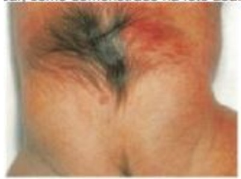
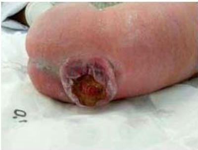

Questão 1 · Instabilidade Atlantoaxial · 4000101819Sobre a instabilidade atlantoaxial no paciente com síndrome de Down, assinale a alternativa correta:
A Dor cervical, torcicolo persistente, alteração da marcha e incontinência urinária não são sintomas típicos da compressão medular
B Indica cuidado especial com a postura dos pacientes quando da realização de procedimentos cirúrgicos, anestésicos ou radiográficos, pelo risco de compressão provocada pela hiperextensão ou hiperflexão.
C Contraindica a realização de qualquer atividade desportiva.
D Só pode ser rastreada por meio da realização de tomografia cervical.
Questão 2 · Instabilidade Atlantoaxial · 4000121185Um menino de sete anos de idade, com síndrome de Down, sem cardiopatia, deseja praticar ginástica artística. Com base nesse caso hipotético, assinale a alternativa que apresenta a orientação correta para os pais do paciente.
A autorizar a prática, já que não há necessidade de avaliação pré-atividade física
B solicitar uma radiografia de coluna cervical, pelo risco de instabilidade atlanto-axial
C solicitar uma avaliação oftalmológica, pelo risco de trauma ocular
D contraindicar a prática, pelo risco cardiológico
E contraindicar a prática, pelo risco de discriminação pelos colegas
Questão 3 · Síndrome de Down Aspectos Ortopédicos · 4000071988Todas as alternativas abaixo são alterações musculo esqueléticas associadas à síndrome de Down, EXCETO?
A Luxação atlantoaxial.
B Displasia de quadril.
C Deslocamento recorrente das articulações.
D Fraturas de ossos longos.
E Necrose asséptica do quadril.
Questão 4 · Mielomeningocele e def eitos de f echamento posterior do tubo neural · 4000027282Leia o caso clínico a seguir. Durante avaliação de rotina de puericultura, um lactente com dois meses de vida, com desenvolvimento ponderoestatural normal e sem alterações neurológicas, é observada a presença de hemangioma plano e hipertricose na região lombar, como demostrado na foto abaixo. A anomalia do sistema nervoso central mais comumente associada a tais achados é:

A Meningocele.
B Espinha bífida.
C Cisto epidermoide.
D Mielomeningocele.
Questão 5 · Apresentação Clínica · 4000025472A paralisia cerebral, ou encefalopatia crônica não progressiva, manifesta-se antes dos 3 anos de idade e apresenta comprometimento de tônus, motricidade, postura e, por vezes, do desenvolvimento cognitivo da criança portadora. Assinale a alternativa incorreta em relação à paralisia cerebral.
A A principal causa de paralisia cerebral em nosso meio é asfixia neonatal secundária ao trabalho de parto prolongado.
B A forma mais frequente de paralisia cerebral é a discinética.
C A prematuridade é fator de risco para encefalopatia crônica não progressiva.
D A paralisia cerebral espástica divide-se nas formas hemiplégica, diplégica e quadriplégica, de acordo com os achados do exame físico.
E A paralisia cerebral atáxica é pouco frequente, correspondendo a 4% dos casos, Nessa forma, o comprometimento intelectual é comum, porém leve.
Questão 6 · Apresentação Clínica · 4000034204Qual das alterações abaixo não é frequente em crianças com paralisia cerebral?
A Anormalidades oftalmológicas.
B Diarreia crônica.
C Distúrbio de deglutição.
D Refluxo gastroesofágico.
Questão 7 · Diagnóstico e Classif icação · Comorbidades associadas · 4000118771RN de termo, pesando 2900 g, medindo 47 cm, nascido de parto cesárea, é avaliado na sala de parto apresentando a seguinte malformação: (Conforme imagem do caderno de questões).Na evolução dessa criança, é esperado quadro de:

A Luxação congênita de quadril.
B Hidrocefalia.
C Arnold-Chiari tipo I.
D Craniossinostose.
Questão 8 · Apresentação Clínica · 4000034071Bêbe do sexo feminino de 8 meses de idade, apresenta ao exame físico uso assimétrico dos braços. O braço direito é mantido em uma posição etida com a mão cerrada. O exame neurológico também revela o aumento do tônus do tornozelo direito e hiper-reflexia do mesmo lado. Tem como história pregressa, parto prematuro de 28 semanas de gestação. O diagnóstico mais provável nessa criança é:
A Paralisia de Erb-Duchenne
B Distrofia muscular de Duchenne e Becker
C Paralisia cerebral
D Atrofia muscular espinhal
E Paralisia braquial
Questão 9 · Paralisia Cerebral · 4000012679Em uma unidade básica de saúde, chega pela primeira vez, um paciente de 2 anos de idade com história de crises convulsivas e de alterações no desenvolvimento visual, auditivo e, principalmente, motor. Ao interrogar a mãe do paciente, constata-se que essas alterações tiveram início logo após o nascimento dele, de modo que a hipótese principal levantada é a de paralisia cerebral infantil. A respeito do diagnóstico apresentado, a etiologia mais frequente desse quadro é:
A Hemorragia cerebral
B Malformações congênitas
C Anoxia cerebral
D Placenta prévia
E Kernicterus
Questão 10 · Def inição e Características Clínicas · Diagnóstico e Classif icação · 4000066485Lactente de três meses, sexo feminino, é levada à consulta ambulatorial e sua mãe informa que a bebê nasceu com mielomeningocele corrigida cirurgicamente com seis horas de vida e que tem Derivação Ventrículo-Peritoneal (DVP) por hidrocefalia. Ao exame físico, apresenta paralisia ácida de membros inferiores, ausência de reflexos tendinosos, perda da sensibilidade e pés tortos. O quadro clínico descrito sugere acometimento da seguinte porção da medula:
A Torácica superior.
B Lombar média.
C Sacra inferior.
D Cervical.
Questão 11 · Fisiopatologia e Fatores de RIsco · 4000021482Quanto aos fatores de risco para paralisia cerebral, é CORRETO afirmar que:
A Como fatores pré-concepcionais, a idade materna e o baixo nível socioeconômico não são relevantes.
B O hipotireoidismo materno e a insuficiência de progesterona não devem ser considerados fatores de risco, pois podem ser controlados com medicação.
C Infecções por CMV, rubéola, toxoplasmose, HIV, sífilis são fatores de risco relacionados, principalmente ao segundo trimestre de gestação.
D Hemorragia uterina materna só é considerada fator de risco se for associada à infecção materna grave.
Questão 12 · Instabilidade Atlantoaxial · 4000084765Em pacientes com síndrome de Down, a radiografia de articulação atlantoaxial deve ser realizada em posição de:
A Extensão, flexão e neutra.
B Extensão e neutra.
C Flexão e extensão.
D PA e perfil.
Questão 13 · Instabilidade Atlantoaxial · 4000071735Durante o acompanhamento da criança portadora de Síndrome de Down, deve-se observar a presença de malformações cardíacas, como por exemplo, CIA e CIV, assim como outras patologias que podem estar associadas a esta síndrome. Entre estas, assinale a alteração ortopédica mais frequente nestes pacientes:
A Instabilidade atlantoaxial
B Deslocamento da patela
C Necrose da cabeça do fêmur
D Luxação do ombro
Questão 14 · Paralisia Cerebral · 4000058278Recém-nascido prematuro de 27 semanas de idade gestacional apresentou durante a sua evolução na UTI neonatal alterações na ultrassonogra a cerebral compatíveis com leucomalácia periventricular cística. A sequela neurológica mais provável neste paciente é:
A Deficiência auditiva;
B Diplegia espástica;
C Paralisia facial;
D Hemiplegia;
E Cegueira.
Questão 15 · Apresentação Clínica · 4000029894Recém-nascidos prematuros com leucomalácia periventricular apresentam frequentemente:
A Deficit de sensibilidade profunda;
B Surdez neurossensorial;
C Deficit motor;
D Retinopatia da prematuridade;
E Síndrome de aspiração meconial.
Questão 16 · Tratamento · 4000013453Em um paciente portador de paralisia cerebral tetraparética e escoliose de alto valor angular, se faz importante seu tratamento cirúrgico para:
A Frear a progressão do déficit neurológico.
B Promover a estabilidade para treino de marcha.
C Evitar a deterioração da condição cardiopulmonar.
D Permitir a reabilitação precoce.
E Nesta situação não é recomendado o tratamento cirúrgico.
Questão 17 · Fisiopatologia e Fatores de RIsco · 4000083175Que condição, dentre as abaixo, menos se associa com paralisia cerebral? Respostas: 1 12
A Evidência de doença genética.
B Peso ao nascimento < 2.000 g.
C Parto distócico.
D Idade gestacional < 32 semanas.
E Infecção perinatal.